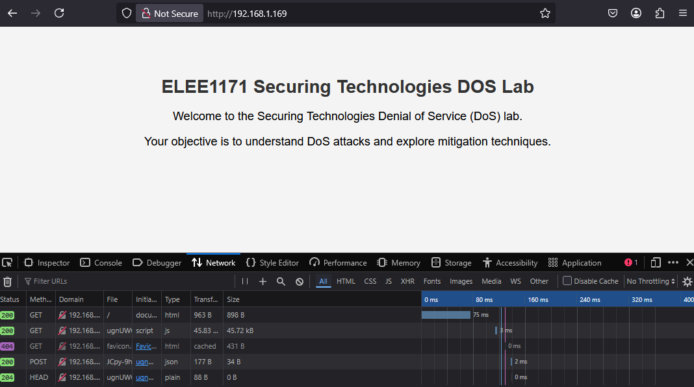
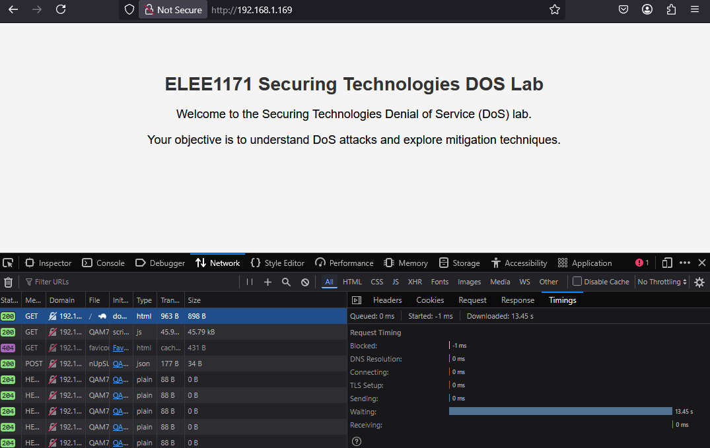

Threats and Threat Actors | System Hardening
There will be a quick demo on Linux terminal basics to acquaint those who are not familiar with the OS before the commencement of this lab.
We will be using Kali linux image with on a Raspberry Pi 5 for the session only, this will be returned per session
Performing any of the attacks outside of this educational setting, outside of the network, ELEE1171_Network, the Raspberry Pis are connected to, is breaking the law.
Exercises 1
Basic ping command:
-
Ping the IP address
192.168.1.169- Take note of the default packet size
-
Increase the packet size to [1024, 4098] and set the count to 4:
-
Try and go larger, use 65536 (\(2^{16}\)), did it succeed?
-
Try again using the maximum as suggested:

Exercise 2
Divide yourselves into groups of 3 for Exercise 2.
Delegate:
-
1 person to be the user
-
1 person to be the web admin
-
1 person to be the attacker
Roles:
-
Web admin starts web service on their server
-
User tries to access the website from their computer
-
Attacker tries to take down the website by intentionally overloading the server with packets it cannot handle.
2.1 Web Admins
On your device you need to start your apache2 server.
-
First check to see if it exists
-
Then check the status of the service
-
Start the service, you will need to enter your root password.
-
Check the IP addrees of your service, i.e your devices IP on
wlan0 -
apache2will launch a webpage located in/var/www/html/index.html

2.2 Users
-
Open a browser
-
Enter the IP Address of the web server in the URL field and hit ENTER
-
Refresh twice and take note of the loading speed/refresh rate, you can also bring up network status of the page in the url using F12

Wait for the attacker to launch the first attack, then refresh and take note of the loading speed/refresh rate.

Reload the page when the attacker halts the first attack. Repeat the same process for the second attack.
2.3 Attackers
-
hping3can be used for launching mild DoS attacks.Regular SYN Flood attack against a web server.
Make the source random i.e., attackers aim to be as untraceable as possible.
The attack here is from a single source (DoS)
Note your observation on the server
-
Smurf attack, will broadcast to all machines on the subnet
Get permission from the lab instructor before performing this as it may affect all machines on the LAN
-
You can check more
hping3options/tags using:
2.4 Questions
What can you do as a developer/organisation/defender to prevent or mitigate the impact of the attacks performed above?
Execise 3
Discovering System Vulnerabilities and Hardening Systems
[Target IP: Provided in the lab] [Target NW: Provided in the lab]
-
Using
Nmap[network scanning tool]**Replace the IP addresses here with the appropriate IP address/Network address of your target.
//Perform a Ping Scan (Ping Sweep or Network Scan or Discovery Scan)
*this will scan the entire network for live hosts
nmap -sn 192.168.0.0/24 -
A basic scan instead:
-
Try a Version Scan
Now that you have ports that are open from the port scan, from the basic host scan, scan for version of services running on those ports
-
Perform an Operating System Scan (Protocol Scan)
Exercise 4
You can do this part if you wish to have more fun. The concepts in this section would be discussed in the Network Security Class.
Targets to be used:
- Lab target machines on the lab network
You are to manipulate flags to get different results from a victim machine
-
SYN Scan, Stealth Scan (Half-Open scan)
-
FIN Scan, Stealth Scan (Finish Scan)
On an Open Port Windows cannot understand this scan and therefore responds differently and with lots of flags, in comparison to Linux that does not respond.
-
ACK Scan, Stealth Scan (Acknowledge Scan)
This scan is not usually used for port scanning but rather to discover if the firewall is on (filtered) or off (unfiltered).
-
XMas, Stealth Scan (XMas Scan)